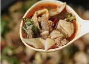
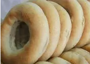

特色小吃
-
鸡丝馄饨
天水的鸡丝馄饨有四大特点：一是颜色亮、二是香味浓、三是做工细、四是营养好。是当地的特色小吃之一。天水的鸡丝馄饨堪称“中国一绝”，走出天水很难品尝到。天
查看详情>> 驴友评论 -
 酿皮
酿皮
酿皮，别觉得酿皮子不起眼，绵软润滑、酸辣可口、爽口开胃，是西北地区特色美食，如青海、甘肃、宁夏、陕西、内蒙古河套等地颇受喜爱。酿皮是用面粉浆汁蒸出来的面皮。有两种，一种是普通酿皮，一种是高担酿皮。
查看详情>> 驴友评论 -

碎面
清真碎面的做法与其它面条的做法大致相同。不同处在于把面擀开后，不立即切，要晾成柔干再切成菱形。面要擀得又薄又匀，切得又细又匀，切成的菱形小片长约1厘米左右，
查看详情>> 驴友评论 -

酥卷卷
甘谷酥圈圈具有色泽金黄、香酥脆绵、油而不腻、耐存久放之长处。据传，
查看详情>> 驴友评论